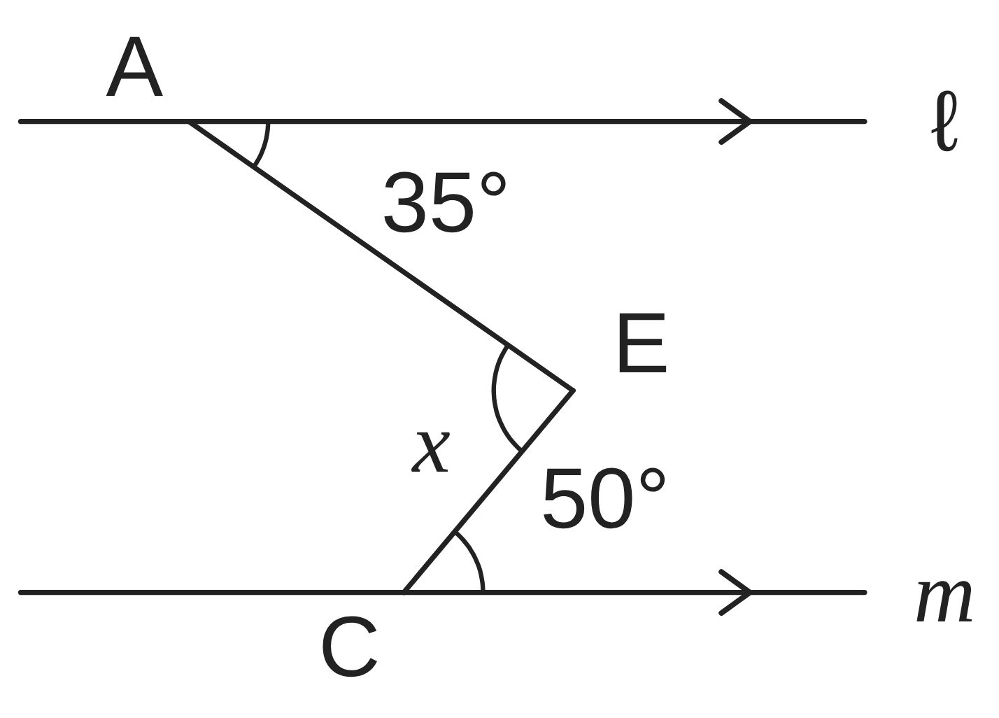
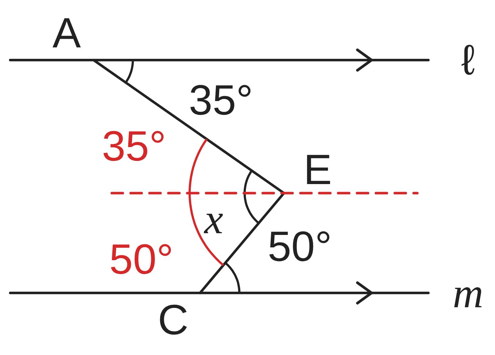
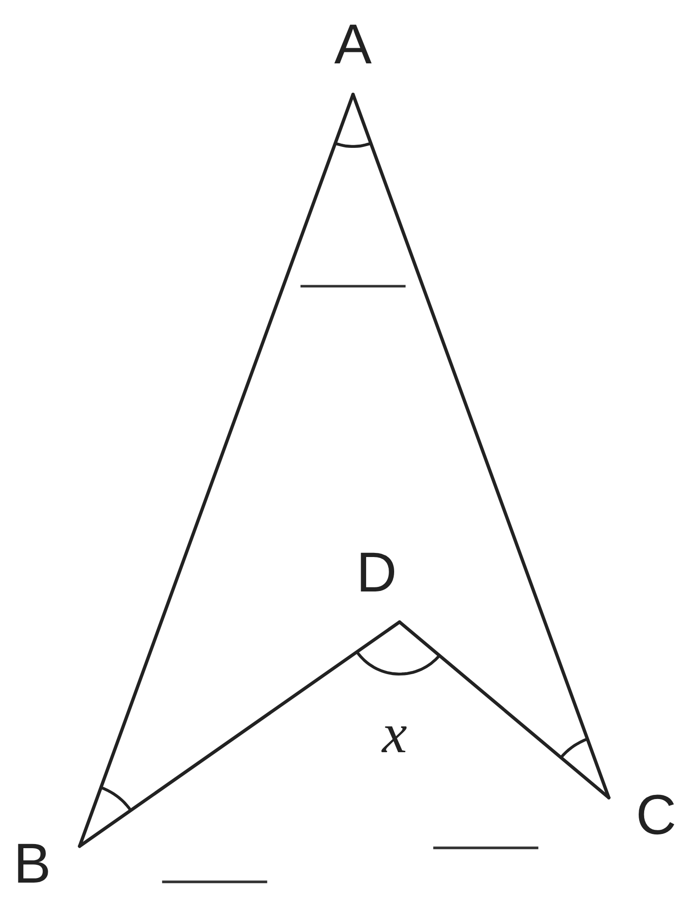
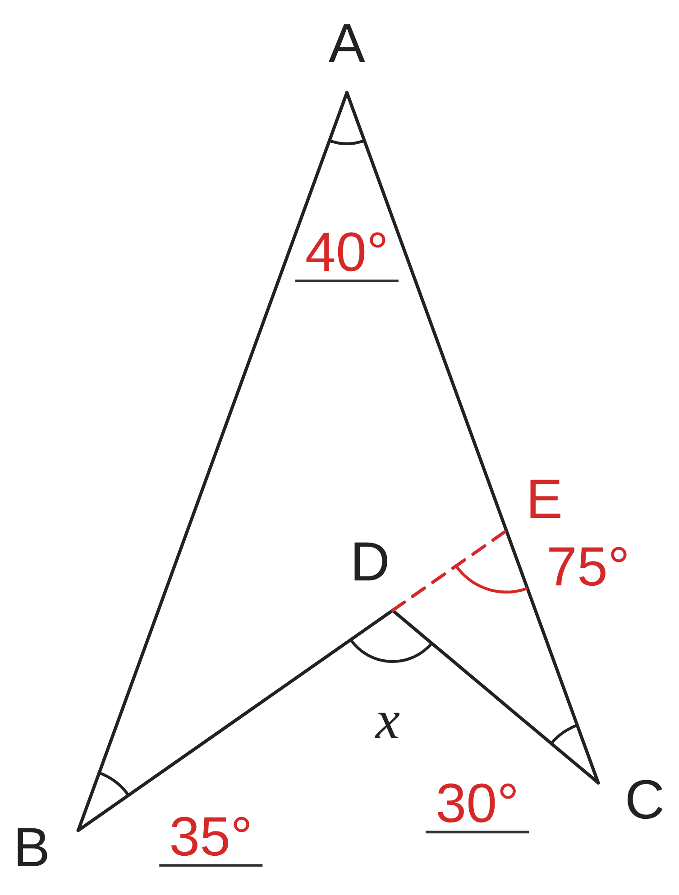
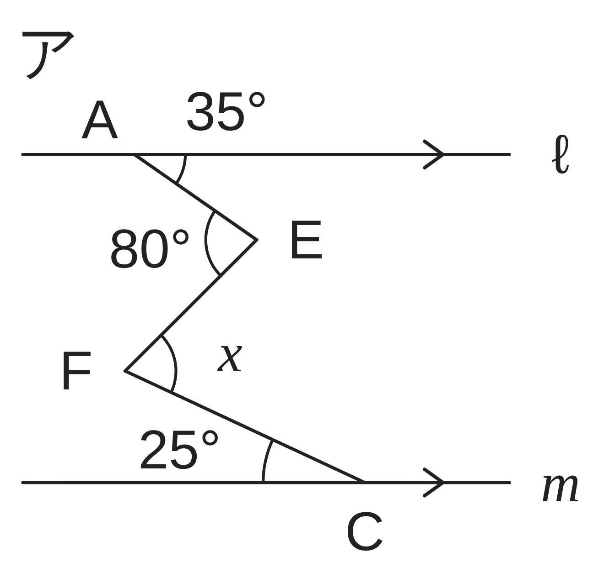
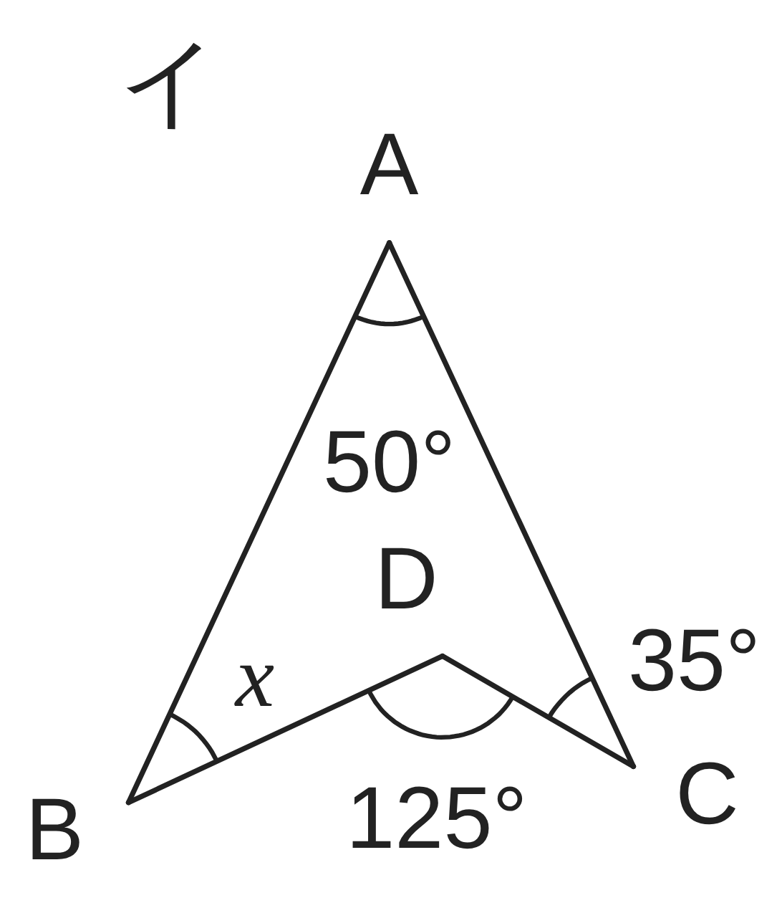
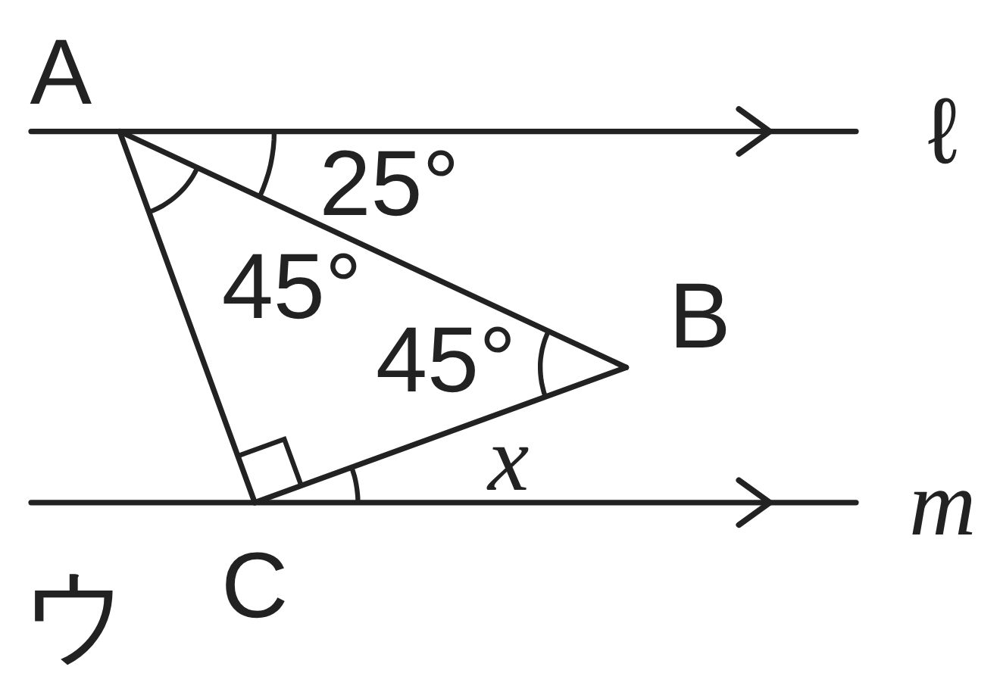

ペア学習
第7時 補助線をひいて、角度のなぞを解こう
前の時間の重要語句を、ペアで出し合おう
第6時の重要語句から、1人1問ずつ、言葉を選んで出題する。
聞かれた人は、その言葉の意味を、自分の言葉で言う。
平行と合同 第7時 補助線をひいて、角度のなぞを解こう
めあて
第7時 補助線をひいて、角度のなぞを解こう
補助線をひいて、角度のなぞを解こう
学習課題
右の図で、ℓ∥m である。
∠x の大きさを求めたい。
図に補助線をかきこんで、∠x を求めよう。
どこに補助線をひくと、求められるだろう。

平行と合同 第7時 補助線をひいて、角度のなぞを解こう
学習課題のまとめ
第7時 補助線をひいて、角度のなぞを解こう
補助線と求め方（例）
E を通り、ℓ に平行な直線をひく。
平行線の錯角は等しいから、
35° の錯角と 50° の錯角ができる。
∠x＝35°+50°＝85°

平行と合同 第7時 補助線をひいて、角度のなぞを解こう
ことば
第7時 補助線をひいて、角度のなぞを解こう
図形の中や外に、角を求めるためにかき入れる線を という。
平行な 2直線に 1つの直線が交わるとき、
も も等しい。
三角形の内角の和は °。
三角形の外角は、となりあわない 2つの の和に等しい。
平行と合同 第7時 補助線をひいて、角度のなぞを解こう
ことば
第7時 補助線をひいて、角度のなぞを解こう
図形の中や外に、角を求めるためにかき入れる線を補助線という。
平行な 2直線に 1つの直線が交わるとき、
同位角も錯角も等しい。
三角形の内角の和は180°。
三角形の外角は、となりあわない 2つの内角の和に等しい。
平行と合同 第7時 補助線をひいて、角度のなぞを解こう
右の図で、∠BAC＝ °、∠ABD＝ °、
∠ACD＝ ° である。
補助線をひいて、∠x（∠BDC）の大きさを求めよう。
このあとの演習のルール
ゴールは、考えようのア〜ウを解いて、
ひき方を友達に説明できること。
ひき方を 1つ見つけたら 1点。説明できたら＋1点（ペア）。

平行と合同 第7時 補助線をひいて、角度のなぞを解こう
例題 解答
第7時 補助線をひいて、角度のなぞを解こう
補助線と求め方
BD を延長して、AC との交点を E とする。
△ABE の外角だから
∠DEC＝40°+35°＝75°
△DEC の外角だから
∠x＝75°+30°＝105°
（∠x＝∠BAC+∠ABD+∠ACD）

平行と合同 第7時 補助線をひいて、角度のなぞを解こう
考えよう
第7時 補助線をひいて、角度のなぞを解こう
次のア〜ウの図で、∠x の大きさを求めよう。（ア・ウは ℓ∥m）
補助線を、できるだけいろいろなひき方で見つけよう。
うまくいく補助線には、どんな共通点があるだろう。



発展
解き終わった人は、考えてみよう。
例題のブーメラン形が
∠x＝∠A+∠B+∠C になることを、
例題とはちがう補助線のひき方でも、
確かめられるだろうか。
①
ア〜ウの ∠x の大きさを求めよう。補助線を、図にかきこもう。
②
補助線の、ほかのひき方を見つけよう。ちがう色のペンで図にかきこんで、
同じ答えになるか確かめよう。
③
うまくいった補助線には、どんな共通点があるだろう。
平行と合同 第7時 補助線をひいて、角度のなぞを解こう
振り返り
第7時 補助線をひいて、角度のなぞを解こう
今日のめあて
補助線をひいて、角度のなぞを解こう
今日わかったことを、ペアで1つずつ言い合おう。
ワークシートと演習プリントを出そう。（未完成でも出す）
平行と合同 第7時 補助線をひいて、角度のなぞを解こう